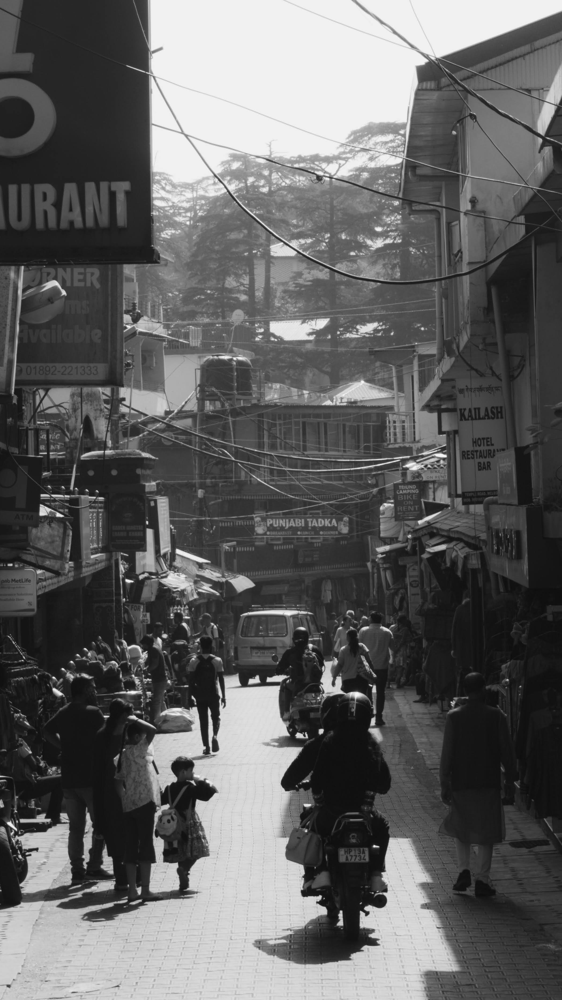
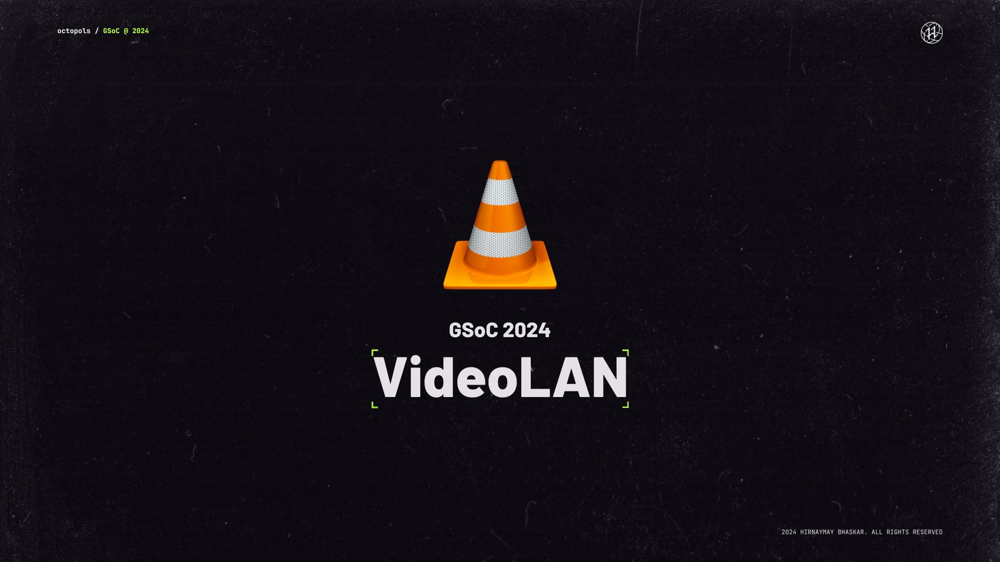
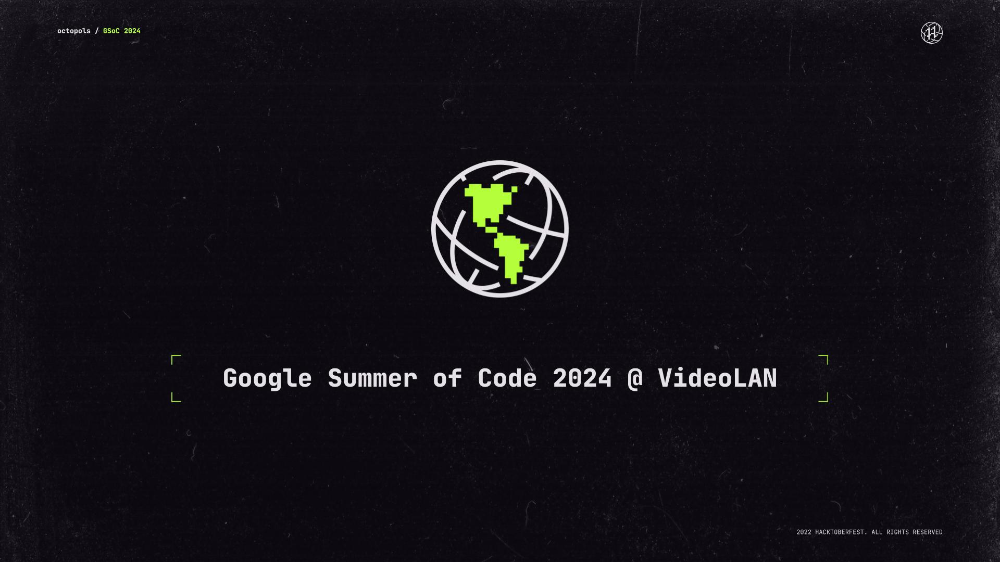
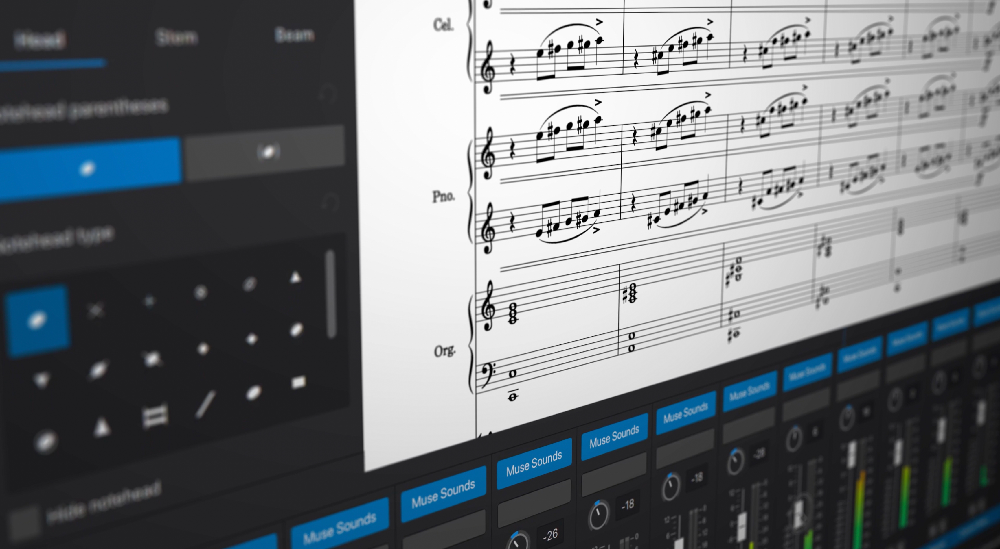
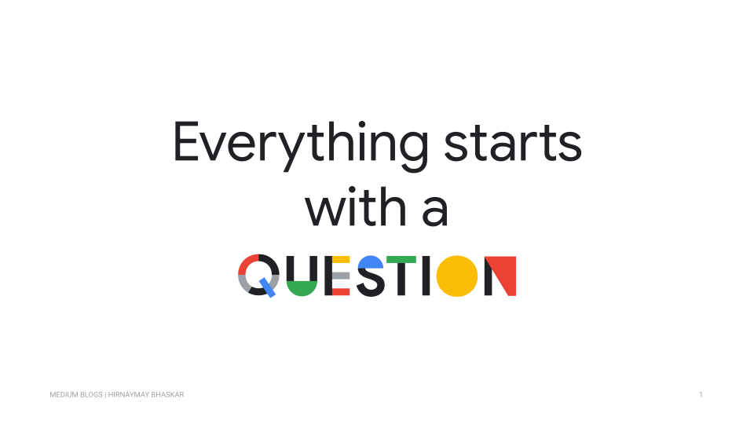

HIRNAYMAY BHASKAR
I own the messaging, billing and event infrastructure at a YC + Sequoia-backed commerce platform. Mostly: finding why something at scale is slow, wrong, or losing money — and fixing the cause rather than the symptom.

BIK.AI
PresentSoftware Engineer II
Apr 2026 – Present | Bengaluru, India
Software Engineer, Dec 2024 – Mar 2026
- • Diagnosed a Pub/Sub delivery backlog the team had been absorbing with a 38-node scale-out; rebuilt consumer flow control, ack-deadline handling and backpressure to cut delivery delay from 2.4 hours to 94 seconds and steady-state backlog from 236K messages to ~100 — retiring all 38 nodes
- • Redesigned campaign analytics infrastructure with a two-tier PostgreSQL cache + Elasticsearch data stream pipeline, taking page load from 20s to 200ms while doubling page size
- • Rearchitected Shopify segment sync as a two-machine state machine (orchestrator + sync executor) with run-scoped checkpointing, idempotent retries and paced execution under GraphQL rate limits — sustaining reliable sync across 250+ Shopify stores and customer lists exceeding 2M+ records, replacing the codebase’s #1 acknowledged technical debt
- • Built BIK’s RCS broadcast platform from scratch—designed a generic channel abstraction for provider-agnostic campaign execution, then implemented Node.js microservices with Redis-backed segment delivery and a webhook-driven status update pipeline, processing 2.5M messages/month for 50+ enterprise clients
- • Audited and rebuilt the end-to-end billing system after identifying a 3-hour daily event tracking gap causing ~12.5% systematic revenue loss; implemented per-client rate card management, per-model AI usage billing (GPT-4, Claude, Gemini), and a full audit trail
- • Architected the shared AWS Step Functions orchestration behind all WhatsApp, email, RCS and SMS broadcasts — one provider-agnostic delivery path where each channel previously had its own
- • Hardened external webhook delivery into per-store Cloud Tasks isolation, with bounded retries and a rolling health evaluator that auto-blocks endpoints past a 50% failure rate — eliminating duplicate deliveries caused by ack-deadline overruns
- • Own billing across every revenue channel. Drove SOC 2 Type 2 and ISO 27001 to certification alongside the CTO; company-wide AWS and GCP administration with org-level IAM ownership

VideoLAN (VLC)
2024Google Summer of Code Developer
May – Oct 2024 | Remote
- • Designed multi-file metadata editing subsystem in C++ and Qt—refactored legacy batch APIs, implemented undo/redo via command pattern, and built extensible metadata provider interface; reduced editing time by 75% for VLC’s 3B+ users
- • Mentored directly by VLC founder Jean-Baptiste Kempf; collaborated on architectural decisions that influenced VLC’s long-term metadata infrastructure roadmap

MuseScore
2023Google Summer of Code Developer
May – Oct 2023 | Remote
- • Built reusable popup and inline text editing framework in C++ using Qt’s model-view architecture; shipped as flagship feature in MuseScore 4.6, used by 10M+ users globally
- • Established extensible widget infrastructure patterns adopted by subsequent GSoC contributors across the codebase

Selected twice consecutively from <1% of applicants to contribute to high-impact open-source projects serving millions of users worldwide.

VLC Media Player
Multi-File Metadata Editing
250+ Shopify Stores
A/B Testing & Segmentation
Building systems that scale. Contributing code that matters. Creating impact that lasts.
Projects
Building tools that solve real problems and exploring new technologies.

HomeCam TV
A Dahua NVR on the television, driven entirely by the remote. Camera wall, recorded playback on a scrubbable timeline, and a page that tells you whether anything is actually recording.

envswitch
Switch shell environments with a single command. No binaries, no hooks to approve, no .env files in your repos. Auto-loads by directory and git branch.

YouTube Comments Search (Quack)
Browser extension for searching paginated YouTube comments using optimized inverted index with native-like UX

Google Trends API Toolkit
Reverse-engineered Google Trends with Python wrapper, REST API, CLI tools, and web dashboard for programmatic data access

Coloc - Roommate Finder
Mobile app using Gale-Shapley algorithm and Elo Rating System for optimal roommate matching. Published research paper in IJFMR
Technical Skills
The backend, data and cloud primitives I build production infrastructure out of every day.
Also worked with
React · Redux — used for internal billing and configuration dashboards fronting the systems above.
Engineering Notes
Write-ups of production backend work
What 38 nodes were hiding
A Pub/Sub delivery backlog the team had been absorbing with hardware, and what actually fixed it: consumer flow control, ack-deadline handling and backpressure.
All writingElsewhere
Earlier writing on Medium and the MuseScore blog

VLC Development with Docker

GSoC 2024 with VideoLAN

Text Style Popup GSoC 2023

More on Medium
Video Content
Educational & Technical